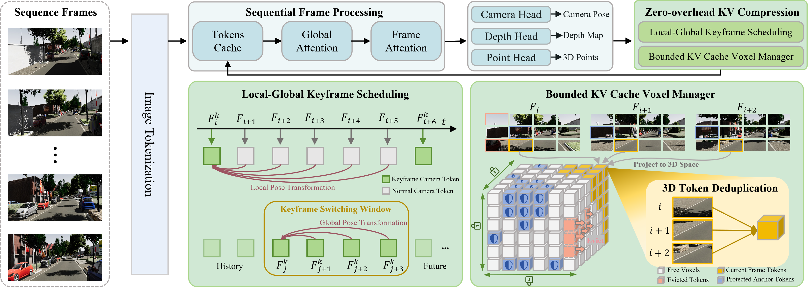
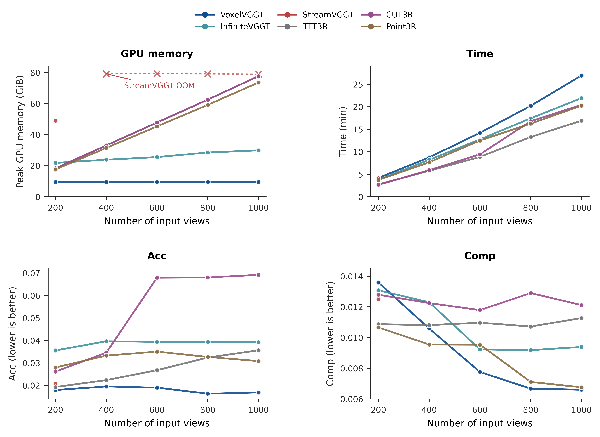

A unified feed-forward framework that bounds geometric memory by spatial coverage rather than sequence length, achieving O(1) stateful streaming 3D reconstruction.
Rotate (left-click), pan (right-click), and zoom (scroll) to inspect the 3D geometry. Switch between different benchmark scenes and evaluate structural retention and drift suppression across competing frameworks without losing camera alignment.
Unified visual geometry models jointly predict camera pose, depth, and point maps in a single feed-forward pass, yet their strongest formulations remain offline because they assume one-shot access to all views. Extending them to streaming is difficult for a single reason: reference-frame maintenance, geometric-memory organization, and budget-bounded retention form one coupled state-management problem rather than separable design choices. We present VoxelVGGT, a training-free streaming feed-forward framework with two main mechanisms: a keyframe-constrained reference frame that fixes a stable local 3D coordinate system through a permanent global anchor and a bounded FIFO ring of history anchors, so that retained tokens stay interpretable across keyframe rotations without rewriting their stored positions; and a voxelized geometric memory that lifts patch tokens into the keyframe-local 3D space and deduplicates them by shared voxel coordinates, so that a fixed per-layer token budget is spent on distinct spatial regions rather than on redundant re-observations. Because both mechanisms consume the predicted camera pose, we supplement them with a decoupled, bounded-memory pose-aware reference cache that suppresses long-horizon pose drift. On 3D reconstruction, camera pose, and video depth, VoxelVGGT keeps memory constant in sequence length while remaining competitive with streaming and stateful baselines.

The overall architecture of VoxelVGGT. After frame-by-frame backbone inference, the model maintains a keyframe-constrained reference frame and a voxelized geometric memory, and outputs the camera pose, depth, and point cloud for the current frame. The keyframe module stabilizes the local geometric coordinate system through an active keyframe, a permanent global anchor, and a bounded FIFO ring of history anchors. The voxelized memory module lifts the current frame’s tokens into the active-keyframe-local 3D space and performs alignment, voxel-level deduplication, and budget-aware maintenance using a zero-overhead importance signal read from the backbone.

Comparison of reconstruction performance on the 7-Scenes dataset. As the number of input frames increases, VoxelVGGT maintains constant GPU memory consumption while preserving high-quality reconstruction results. VoxelVGGT's inference speed also remains competitive.